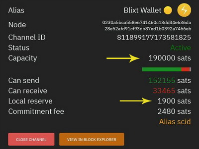

Frequently Asked Questions
Versión en Español aqui
What is the Lightning Network?
Before you start using Blixt Wallet, it's important to get familiarized with terms, procedures, features, etc.
It's a good idea to start reading and get some basic knowledge about LN and how to use it, otherwise it will be
difficult for you, as a new user, to understand what you are doing with Blixt Wallet as a node LN wallet.
Here are some resources to start learning:
A. General information and documentation about the Bitcoin Lightning Network
-
The Lightning Network and the airport analogy
-
An Overview of Lightning Network Implementations
-
Lightning Network Resources, complete library about LN - by Jamesson Lopp
-
Daily spending wallet, guide about using a Bitcoin and LN wallet - by Bitcoin Design
-
LND Documentation - by Lightning Engineering
-
Lightning Node Management – by openoms
-
Lightning Node Management in Español – by openoms
-
Beginners LN Guide – by Bitcoin Q&A
-
Lightning Network Dev Curriculum – by Chaincode Labs
-
The Lightning Book – by Rene Pickhardt, Olaoluwa Osuntokun and Andreas M. Antonopoulos
-
⚡️ Lightning Network is awesome ⚡️ - collection of all kind of things you can do with LN
B. Video tutorials about the Lightning Network and Bitcoin nodes
-
What is a Bitcoin node
-
The Lightning Network: The most efficient payment system in the world
-
How LN channels work – by Decentralized Thought
-
LN explained – by René Pickhardt
-
LN Channels Management – by Alex Bosworth
-
Everything you need to know about LN – Till Musshoff
Blixt doesn't sync. Why is this and what can I do?
First of all, let's explain some reasons for WHY it is not syncing, so the user can understand the situation:
- The Blixt app needs to be online (connected to the internet) in order to connect to the Neutrino node and sync
the block headers and filters. If your device, for some reason, is not connected to a stable internet
connection, Blixt will stall the sync until it is restarted.
- If you use the Tor network, the connection is quite unstable sometimes, not because of your device but because
of poor or congested Tor relays in your area.
- Keep in mind that Blixt uses quite a good amount of storage on your device, up to 2GB, so be
sure to have enough free space, otherwise the app will stop the sync.
- Sometimes the sync was not done properly and the app didn't scan all your BTC addresses.
- If you switched to sync with your own home node, maybe your node was not prepared for this or connection with
your node was interrupted.
So what you can do?
- Restart the Blixt app (try force close for closing bad connections).
- Remove Tor connection (if is possible and you want it) and restart Blixt.
- Switch between your internet connections (Wifi <-> 4G). That could trigger a refresh of DNS providers in your device.
- Switch back to default sync server node.blixtwallet.com, or just leave it blank.
- Optional you can use an alternative Neutrino Node node.eldamar.icu or your own node if you run one.
- Go to Settings -> Rescan wallet, then restart the app. Once restarted, go to Settings -> Read lnd
log, or go to Settings -> Copy lnd log to local storage to save a copy of the lnd log.
- Check if you have enough space on your device. Move apps, photos, and videos to your mSD card, and leave more
space on the local disk. Blixt needs up to 1.5GB for its data (block headers, LN graph, channels.db, etc).
- Restart the app, then go to Settings -> LndMobile Help Center, and run a diagnostics test. Get in
contact with Blixt support on Telegram for further
instructions or to share logs.
What are the fees? Is there a cost to use LN channels?
1. Blixt Wallet itself does not charge any fees for usage of the app.
2. Use of the Lightning Network (LN) is not free! This is a myth. Even if the cost of using LN is really
small, there is a cost, and some users will look at that cost too.
3. Opening and closing channels on LN has a cost, and sometimes it's not cheap. It also depends on the
current miner fees when opening a LN channel. Sometimes it can be really high, sometimes it can be really low.
Users should first learn about how fees work. To learn more about mempool, users can read What is
Mempool?. To learn more about LN fees, users can read Lightning 101: Lightning Network Fees.
USE CASE SCENARIO:
You are a new Blixt Wallet user, and you have just installed the app. You have no funds deposited into the
wallet.
Let's say you choose to use the Dunder LSP service (see down below how Dunder LSP works and
what is LSP) to deposit 100k sats into your Blixt LN wallet.
The moment the LSP service receives your 100k deposit, it will use those 100k sats to open a 400k sats channel
(amount can vary, see here for more details) towards your wallet. You will have 100k sats as
outbound liquidity and 300k sats as inbound liquidity, but that opening comes at a cost: on-chain fees for the tx
as well as a commit fee (reserve held for channel closure). More information on committing fees can be found in
the following links:
What is the channel reserve?
"I have opened a 500k sats channel, but I can't use more than 495k sats, it says insuficient balance. Why is that?"
Another aspect to take in consideration is the "channel reserve". If you go to your Blixt - top drawer - Lightning Channels
you will see in the channel details that is mentioned how much is the channel reserve.

A channel reserve is an amount that is set aside by each channel participant which ensures neither have "nothing at stake"
if a cheating attempt occurs.
This reserve (usually 1% of the total amount of the channel) cannot be spent, and is held aside for the entirety of the channels lifetime.
Channel reserves make cheating attempts less economical. When one channel party attempts to cheat the other and they are caught,
a penalty transaction can be used to steal all the cheating parties bitcoin as punishment.
Channel reserves makes it so cheating attempts always have something at stake making this less likely to occur.
Read more about LN channel reserve here.
With which nodes can I open lightning channels?
REMEMBER:
- Blixt Wallet uses private channels, not routing channels.
- You can open channels with whatever node peer you choose, but choose wisely.
- Blixt Wallet is a private node wallet and mostly for quick payments. You will need to find the best routes:
cheap, fast, reliable, and well connected peers.
- You can connect to your own home node, but keep in mind that at that moment, your home node will be the
liquidity provider for your wallet, so make sure it's reliable and you have good routes and good fees.
- Not every LN node wants or agrees with private channels. If it is a dedicated routing node, they usually do
not want private channels because for them it is like "locked" liquidity. It is better if you can first ask the
node operator if they will agree to a private channel. You can open directly, but be aware that some of them can
close the channel because they do not want private channels.
Blixt Wallet itself offers two optional methods for opening channels with the Blixt Node Server:
- Autopilot: at the moment, it works only for the first
on-chain deposit in Blixt and will open a channel with the Blixt Node for the amount you deposited.
- Dunder LSP: Blixt Node Server will provide you
with an inbound channel until 400k sats, on top of your deposit amount, to start with your first deposit on
Lightning (if you do not have any other channel). You will need to activate it in the Settings menu.
Inbound liquidity providers - Blixt also offers a direct link, in the wallet, to LNBig and Bitrefill (Thor). Go
to Settings -> Inbound channel services. Select the desired one, and follow the instructions provided.
Those are used only when you need more "INBOUND" liquidity.
Open channels with any other good nodes -
Blixt Community recommended peers
is a good source to inspire from other Blixt users. As we've pointed out, we recommend choosing your peers wisely.
Blixt is a quick-spending LN wallet. We recommend finding one with low fees or even zero fees. Also, look at this Amboss Community
of Zero Base Fee or any other node community. Your Blixt Wallet needs good peers and low fees, so your
payments will be fast and cheap.
It is very good practice to open channels with merchants or services you pay frequently. Opening a channel with
your favorite merchant can bring you 0 fees since it is a direct channel and it is like a "line of credit." You
can also use that channel to pay other merchants or services. Just be aware of their fees for routing your
payment, because if there isn't a direct payment route, their node will have to route your payment to the next hop
until it reaches the destination, and that comes at a cost.
How is it possible to have a node on a mobile device?
Blixt Wallet uses the lightning node implementation lnd and the
Bitcoin SPV client Neutrino directly on the phone. Lnd has been configured to work well on mobile devices.
Keep in mind that Blixt Wallet is a Lightning node, with LN channels as any other node. That means that in order
to be able to transact on LN, you need to be online and connected at the moment of the transaction. If you do not
transact, it's not necessary to stay online. Blixt. Once Blixt is open, it will take a few moments to re-sync the
latest blocks through SPV Neutrino, and you will be back online. On the other hand, for transacting on-chain (not
LN), it's not necessary to be online.
Can I route payments with Blixt Wallet?
Blixt is not a routing node, it is more like a private LN node.
All channels on Blixt are private, which means they are not "visible" to the other routing nodes in the
network. These so-called "unannounced" channels are used only for private payments.
Your Blixt LN node can send and receive payments using other nodes as hops, but can not route other payments
through your Blixt node.
That's why Blixt is so special ... nobody knows about your payments. Check out this
short tutorial about LN onion routing.
Can I receive sats through keysend?
Yes, always when your Blixt Wallet is online.
To display your nodeURI/QR code, go to Menu -> Advanced -> Keysend Experiment. Have the payer scan that
QR code and pay.
Aspects to keep in mind:
- If you want to share your nodeID on a website or send it to someone so they can pay you via keysend, your
Blixt Wallet must be online at the time of the payment.
- If you, as receiver, are using a Tor connection, the payer also has to use a Tor connection, otherwise they
cannot "see" your Blixt node and connect with it.
How do I connect Blixt Wallet to my own full node?
Under Settings -> Bitcoin Node, you can enter a Bitcoin node to connect to.
BIP157 compact filter indexing must be enabled for your node. Add this to your bitcoin.conf if it isn't already set:
blockfilterindex=1
peerblockfilters=1
Also your Bitcoin node's port 8333 should be forwarded into your internet router.
Can I remotely control an Umbrel node from Blixt Wallet?
Blixt Wallet is a fully fledged lightning node in and of itself. It's not possible to connect to
and control a remote node like Umbrel, myNode, RaspiBlitz, etc. For that management task, you would need to use
apps like Zeus, Zap, Thunderhub, Ride The Lightning, or Fully Noded.
Instead of controlling your node from home, enable Tor and open a channel to it. That way, you could use your
Blixt Node Wallet as a companion for your home routing node. See more details on the Guides page.
I lost my mobile phone (dead, stolen) or simply want to migrate to a new phone. What is the procedure?
RULE NO.1 - You should always have a channel backup and keep it in a safe place (e.g., password manager). If you
did that, the procedure is simple and you have two ways (fast and slow) and also two situations to take into
consideration (whether you had funds in on-chain or not).
RULE NO.2 - Never use a full backup of a device as a restored backup for BTC/LN wallets. This can result in
losing funds by broadcasting the wrong state of channels.
NOTE NO.1 - Migration (or funds restore procedure) means creating a new Node ID and moving the restored funds to
it. This is a better procedure for privacy, safety of funds, and overall ease of use.
NOTE NO.2 - If you have the ORIGINAL DEVICE still working and online with funds in LN channels, NEVER do
the restore procedure on a new device with the channels restore options. This action will force close the existing
channels and you could get a penalty for that (broadcasting twice the status of channels). You can ONLY restore
the on-chain wallet/seed on another device, keeping the original still open, but never restore the channels
backup.
NOTE NO.3 - If, after starting the restore process, you do not see in the "Lightning Channels" menu that the old
channels have entered the status "closing," or if they are not there at all, it is safe to restart the restore
process from the backup file. There is no need to start over from zero with an on-chain restore. If your on-chain
wallet is restored and funds are back, it is OK to continue with LN channel restore.
NOTE NO.4 - If you restore LN channels that were open using the Tor network, then BEFORE starting the restore
process, go to Settings -> Enable Tor. That way, your Blixt node can "see" the Tor peers and start the
closing procedure in the normal way.
Scenario A - migrate Blixt to a new device (fast way)
Conditions:
- You still have the old device functional
- You have a new device ready with Blixt Wallet already installed (but not started yet)
- You have funds ONLY in LN channels, the on-chain is empty
Procedure:
-
Create a new Blixt wallet instance on the new device (new seed) and save that seed into a safe place (e.g.,
password
manager).
-
Wait for Blixt to sync (takes just a few minutes), you will see the sync icon on the top right disappear.
-
On the new device Settings -> Enable Dunder LSP.
-
On the new device, go to main screen and click on the Receive button to create a new LN invoice to open a
Dunder LSP channel.
-
Put the amount of total balance available displayed on the old device Blixt (main screen), then press
CREATE INVOICE.
-
With the old Blixt device, scan the LN invoice QR code and pay it. The old wallet will send all available funds
to the new one, and Dunder will open a new channel for you with that amount.
-
It will take a few minutes until the tx is confirmed and the channel is opened on the new device. Be patient.
-
Once you see the funds in the new device available, it is recommended to close those old empty channels. If
there are some residual satoshis, they will go back to the on-chain wallet and can be sent later to the new
device using an on-chain tx.
-
DONE! Blixt can now be deleted from the old device, and the funds are safe in the new one.
Scenario B - old device is lost, non-functional, or non-recoverable (slow way)
Conditions:
- You do not have the old device anymore
- You have a new device ready with Blixt Wallet already installed (but not started yet)
- You have funds in the LN channels but also in the on-chain wallet
Procedure:
-
Install Blixt Wallet on a new phone.
-
On the first screen to create or restore a wallet, go to Settings -> Enable Tor (if you previously
opened channels with Tor nodes). You have funds in the LN channels but also in the on-chain wallet.
-
Blixt will restart in Tor mode. Then click on "restore." Fill in your 24 word seed from your old wallet, space
delimited. You can also add the channels.backup file you saved previously and copy it onto your new phone.
Optionally, you can use Google Drive, if you have it there.
-
Click "restore" and wait for the app to perform the standard procedure for recovering the funds.
-
Blixt will close the existing channels and, after a few blocks, funds will be recovered and visible in
your on-chain wallet. Be patient.
-
To check the funds, go to Menu -> On-chain. Click the top right menu to see the Transaction Log. After
channels are closed and txs are confirmed, locktime expires. The funds are displayed here.
I restored my old node using the SCB file, but funds are not back in my on-chain wallet.
OK, I had a previous dead node and I used the restore procedure, using the SCB backup channels file into Blixt. I
wait for the channels to be closed, but funds are not back in my on-chain wallet. What can I do?
Usually, there are a few possible scenarios for closing channels:
-
A normal "cooperative close" channel usually takes a few blocks if both peers are online. Then everything goes
smooth and fast.
-
If the other channel peer is not online, the closure task takes effect. This could take at least 144 blocks
until funds are released from the lock time. Check the locktime for the closing tx on mempool.
-
A normal closure can be for many reasons, but mostly because of lost connectivity. If a normal closure gets
stuck, then once the rest of the channels have entered into a "waiting to close" state, you could repeat the
process to once again push the closure of the remaining stuck channels.
-
Another way to "push" the connection with your lost peers is to add them manually. Go to amboss.space, search for your peer,
copy or scan the QR URI of your peer, and go to Settings -> Show Lightning Peers -> + .
-
To try a force closing action again, go to Menu -> Lightning Channels. Select the channel you want to
push, and swipe on activity view to start the process again.
Once all the channels are initiated into "closing", wait patiently. This process takes time.
If you see that on mempool the tx has released the funds, check your on-chain wallet. If funds are still
not there, it means that the lnd wallet has to rescan previous addresses and refresh the wallet history. Some
UTXOs are linked to "anchor outputs," so they are more complicated to get back on-chain.
When you see that all channels are closed, go to Settings -> Rescan wallet. Activate it and restart the
app if it does not do so automatically.
Only when the lnd is initiated, can the rescan take place. Be patient and check the lnd logs (see Settings ->
Read lnd log). You will read in there how it is scanning many blocks at once for your restored addresses.
Once the process is finished, you should see the funds in the on-chain wallet.
Try to keep the Blixt app active during this process. If it is interrupted, you will have to restart again to
trigger it.
IMPORTANT NOTES TO CONSIDER (in regards of how LN funds are moved):
- When you open a channel of 2M sats with a peer, in the beginning, all the sats will be on YOUR side.
- You start moving these sats by making payments and/or routing others' payments through this channel.
- If you do not make your own payments out of your node, your balance will always be the same, but some channels
will move sats in and out.
- By routing others' payments, the dynamic of your channel's balances is changing. That is, if you started with
2M sats and routed 1M sats, your channel balance will be 1M sats. When you close that channel, you will get back
1M sats and NOT 2M sats that you had initially.
- Before you begin to close your channels, remember the total balance you had in your node on YOUR side of the
channels. That is the amount you will get back. Some channels will be empty on your side, so don't expect to get
sats from those closed channels.
I have one channel with my home node, but I get "no route found". What can I do?
In this case, having only one channel open with your own node, you will need to tweak a bit your node.
And we've found these options that will help your Blixt to "communicate" better with your home node.
Go to your home node lnd.conf file and add these lines:
at the end of [Application Options] section
numgraphsyncpeers=9
ignore-historical-gossip-filters=false
under [Routing] section
routing.strictgraphpruning=false
under [gossip] section (create it at the end if you do not have it)
gossip.max-channel-update-burst=20
gossip.channel-update-interval=1m
We always recommend to have more than one channel open and not just with the same peer, but with different peer nodes.
As we explain it in this section.
What would be the procedure to close channels with a peer node?
I have a channel with a peer node that I want to close it / peer announced that will shut down his node.
I would like to have the minimum impact possible over my remaining balance and pay minimum fees.
The simple answer is to have a "collaborative closing", so follow this procedure:
- Wait for Blixt to sync and also bring online your LN channels.
- Eventually check Blixt lnd logs in settings if all the sync is done.
- Check if your peer is connected. Go to Settings - Lightning peers and check if the peer with which one you want to close is online.
If is not, try to add it, by scanning his node URI.
- Go to Blixt top drawer - Lightning channels
- Select the channel you want to close and click on the red button "Close channel".
- Confirm the closing and wait with Blixt app active until you see the confirmation tx of the closing channel.
- It will take few moments to be closed, depending on the status of the mempool
- Once the closing tx will have 3 confirmations in the mempool, your remaining funds will be displayed in the on-chain wallet.
Done. This will close the channel with minimum costs in fees and also the channel reserve is returned to your onchain address.
If you want a "force close" of the channel, in case that the peer is already shut down, non-responsive,
then instead of a simple click on the red button, use a long press on the same button and then the popup message will contain the words
"Do you want to FORCE CLOSE this channel?" and will push the closure with a higher fee.
REMEMBER: this procedure will take more time to be confirmed, due to a lock time of the closing tx, in case are penalties to apply.
It could take up to 144 blocks, aproximately 2 weeks, but no more.
If for some reasons, the coop close is not done well (see if your txid is not broadcast in the mempool after long time),
then you could try to push a "force close" of the "waiting to close" status. This could happen sometimes, for various reasons.
Here is an example:

Once you hit the button "Force close pending channel" you will be asked if you are sure and then a message that it will start force close.
Be patient, after few moments, you will see in the lnd logs the message that the force close was inititated:
[INF] PEER: Waiting for confirmation of cooperative close of
ChannelPoint(6659e11bd3fc6f266c2e057545a7b4c8ec6e6dbc3579167e4346889af602b485:1)
with txid: ce3ed9c8396c8dda4085be8aef4eff4207562f7fdfb79413ab27b828789170ac
When the txid is taken in a block and you have the 1st confirmation, you will hear a jingle from Blixt app.
The closing is on the way, but be aware of the indicated maturity block height, is when actually you will receive the funds in onchain.
Usually are 144 blocks for force closing. That means aprox. 1 day.
Can I restore my Blixt wallet into another app?
Yes. Remember that Blixt is a full vanilla LND node wallet (aezeed).
What does it means that? Means that you can restore it in any other wallet app that support LND/aezeed type mnemonic seed.
IMPORTANT NOTE:
There is a limitation anyways. Blixt now is using also Taproot type of addresses. Is not by default, but if you activated that option
in Settings, your Blixt wallet will generate Taproot format addresses.
Keep in mind that not all other apps that can import xpub or full Blixt aezeed wallet could also display / read those adddresses.
That means, you will miss some sats in your balance displayed because those taproot addresses will be ignored. That doesn't means you lost your sats.
It just that are not displayed, not shown, not "readable" by the app you use to import the wallet.
Let's say you cannot install anymore Blixt app on your device. You could use the following procedures, to restore your funds from a Blixt wallet:
There are two ways/methods to restore your Blixt node into Zeus: only onchain wallet and / or full recovery with LN channels.
- Only onchain recovery - Simply put your Blixt 24 words aezeed seed into Zeus restore procedure
wait few moments to restore old UTXOs and done. Wait for Zeus to rescan all UYXOs and all your onchain balance will appear into the onchain wallet.
- Full recovery with channels funds - Take the SCB file exported previously from your Blixt node and copy the encrypted Basde64 code into
Zeus restore procedure. Remember also to insert the 24 words seed.
Simply put your Blixt 24 words seed into restore procedure, wait few moment to restore old UTXOs and done.
REMINDER: this is restoring ONLY onchain wallet, not also the LN channels! And also will not read your taproot addresses from your wallet.
This procedure is very well described in this excellent guide by openoms.
REMINDER: this is restoring ONLY onchain wallet, not also the LN channels! And also will not read your taproot addresses from your wallet.
REMINDER: this is restoring ONLY onchain wallet, not also the LN channels! And also will not read your taproot addresses from your wallet.
The procedure is not complicated but require some steps:
- Go to Cryptography Toolkit and download the page as HTML file onto your computer.
- Open that HTML file in "offline mode" (no internet) and select "aezeed Cipher Seed Scheme" from Tools. Then go to the 2nd tab "Decode Mnemonic".
- Paste your 24 words into the "Mnemonic" field.
- Select format BIP84 native segwit and wait a bit to be decoded.
- Copy the zprv displayed into the field "HD node root base 58".
- Open (already downloaded) Sparrow wallet app and select "new wallet".
- In the "Keystores" select "new imported software wallet".
- In the next window that will open, select "Master Private Key BIP32" and paste that zprv key you get it from the cryptography tool
and click "import". It will show you that is a m/84/0/0 derivation path (as it should be).
- Click on "Import Keystore" and it will go back to main window of the wallet app where you can see all the wallet config.
Click on "apply" and will prompt you to set a password to encrypt your local wallet file.
- Sparrow app will start scanning all your keys and txs and it will be displayed after
a while in the "Transactions" tab. Patience, it will take some time.
REMINDER: this is restoring ONLY onchain wallet, not also the LN channels! And also will not read your taproot addresses from your wallet.
And done! You've just restore your Blixt onchain wallet in Sparrow.
D. Using another LND node instance.
Yes, is fully compatible with any desktop LND node, as myNode, Raspiblitz, Umbrel, Nodl, Citadel etc.
You could even restore your funds from LN channels if you have the SCB file (static channels backup) from Blixt.
Simply follow the regular procedure of restoring a LND node using the seed + scb file:
LND nodes procedures
This procedure could also read/restore your taproot addresses from your wallet, if you are using a LND version higher than 0.15.4.
Payments with Blixt not working. What can I do?
During the Blixt v0.6.2 our team did a lot of testing in regards of pruned zombie channels
that were affecting the normal activity of LN users and especially Blixt users.
To fix this annoying issue (payments stuck or mostly failed) it was released the Blixt v0.6.3
with a special flag for prunning all these zombie channels.
Unfortunately, to get rid totally of this issue, Blixt users must close old existing channels,
create from scratch a new Blixt wallet / nodeID using the new v0.6.3 or next ones.
Procedure A - keep the same Blixt nodeID/ wallet seed:
- Open your Blixt Wallet, wait to be fully synced (onchain and LN graph).
- Go to top drawer and select "Lightning Channels".
- Select "close channel" for each channel you already have open.
- Keep your Blixt app online / active until you see the closing transaction done and your funds are back in your onchain wallet.
- Go to "Settings" and from "Show mnemonic" write down your 24 words seed words (if you didn't saved them before).
- Now, you can go and uninstall the existing Blixt app (v 0.6.2). It will wipe all Blixt data from your device.
- Install the latest Blixt version (See here the github releases page)
- When you start the new Blixt app, select "Restore" and put your previous 24 words seed.
- Wait until is recovered and all the old addresses are rescaned and your funds will appear in the Blixt onchain wallet. Have patience.
- Now you are ready to open new LN channels as usual with the balance you already have restored.
Procedure B - create a new Blixt nodeID / wallet seed:
- Open your Blixt Wallet, wait to be fully synced (onchain and LN graph).
- Go to top drawer and select "Lightning Channels".
- Select "close channel" for each channel you already have open.
- Keep your Blixt app online / active until you see the closing transaction done and your funds are back in your onchain wallet.
- Go to top drawer - "Onchain wallet" and send all funds to other external onchain wallet (temporary).
- Now, you can go and uninstall the existing Blixt app (v 0.6.2). It will wipe all Blixt data from your device.
- Install the latest Blixt version (See here the github releases page)
- When you start the new Blixt app, select "New wallet" and follow all the instructions for a new Blixt wallet.
- Wait until is synced and then send back all the sats you had in that temporary onchain wallet to this new Blixt wallet.
- Once you get back the sats, you are ready to open new LN channels as usual with the balance you already have restored.
If I reinstall Blixt Wallet or switch devices, can I keep my previous channels?
Right now, NO. In the future, maybe it will be possible through a more advanced procedure saving the wallet.db and channel.db files
from encrypted side of the device into a separate repository, from it can be made the migration to another device.
Blixt follows the LND standard procedure of restoring funds using the SCB file (SCB = static channels backup) previously saved
Until the optional procedure will be implemented, please make your usual SCB backups and follow the instructions described in the chapter Restore Blixt funds
REMINDER: do the SCB backup each time you open or close a LN channel. There's NO need after each payment.
Does Blixt Wallet have a Lightning Address I can receive with?
NO, NOT right now. But soon it will have added a new powerful feature named Lightning Box"
This feature will provide the user with a personalized self custodial Lightning Address linked to his own Blixt wallet.
Stay tuned, soon will be released this new feature for Blixt!
Can I receive sats while Blixt wallet is closed?
Right now, no. Soon, when the Lightning Box will be implemented in Blixt, then yes, you will be able to receive, while your Blixt app is closed / not online
Channels opened with Dunder are max 400k sats capacity. How can I have larger Dunder channels opened?
Yes, the current limit for opening Dunder channels with Blixt node is max 400k sats.
>
And that is for some reasons:
- Blixt node MUST put from its own pocket the amount of sats as remote balance.
- Blixt node, is offering this service for free now, but this could not stay forever. It is just a courtesy for a easy onboarding new users.
- Blixt developers are encouraging more node operators to run Dunder server
and offer themselves these kind of services, with larger size of the channels and including charging fees. If you will run such Dunder service,
your Dunder server could be listed in Blixt app as optional provider too. Like this one (from another Blixt developer): dunder.eldamar.icu,
offering even smaller channels as 200k sats max for testing purposes.
- Do NOT consider Dunder channels as inbound channels! These are designed to be used as quick onboarding method,
when the new user do not have any sats in his new Blixt wallet onchain, to be able to open channels. Yes, you can open multiple dunder channels,
but please do not abuse this option and also having multiple channels with same peer is NOT recommended and could end up in failed payments.
To change the default Dunder provider, go to Settings -> Set Dunder server and put the name of server.
Then go to Debug Section -> Test Dunder server and see if is responding correctly. After that you can open a new Dunder channel.
If the user need more inbound liquidity, please use the specific method with Inbound LSP, that you can find it in Settings.
I notice that my Blixt occupy a lot of space on my mobile device. How can I reduce it?
Yes, that could happen due to Neutrino sync that is keeping the old sync temporary data on the device.
Also a part of that data is from LN Graph sync, but is not too much and that data is re-synced every time you open Blixt, overwritting the old one.
>
Until new developements on Neutrino server code, we advice to do the following steps to clear up that old data.
- DO NOT clear data from Android app storage details!
- Open Blixt and go to "Settings". Scroll way down to the "Debug" section and click on "Stop LND and delete Neutrino files".
- This will restart Blixt and at the startup will erase the old neutrino data and resync the new ones, freeing up the storage.
- Next step is to compact the LND database. Again, go to Blixt "Settings", way down to "Debug" section and click on "compact lnd database"
Blixt will restart again and in few moments will compact the database. This compaction will have a serious effect on battery life.
- Now you can go back to Android Blixt app storage details and check the occupied space.
This procedure is also good to do it, when you se your Blixt in persistent mode. We've notice that by deleting this old data the device is not working
so intensively and heating up the battery. Also is noticed an improved less utilization of the battery.